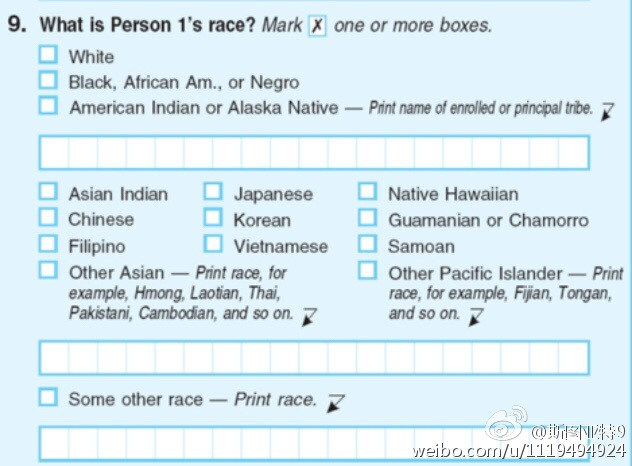
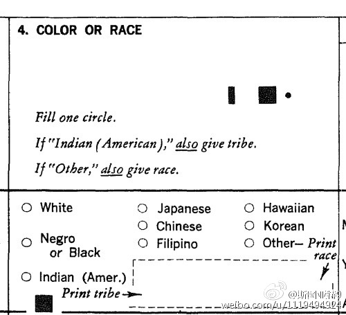

美国人口普查表格上的种族一问（两张图分别是2014年的和1970年的）。有人说，虽然没有明确标明，但这是明确的把人分为白人、黑人、印第安人和亚裔四个四个种族。这是基于18世纪的（早已被认为缺乏科学性的）颜色人种的理论，把人分为白种人、黑种人、黄种人、红种人和棕种人。 
原来普京不止支持特朗普，支持英国退出欧盟，还给法国的右翼Le Pen提供活动经费。俄国对外宣传电视台RT定期采访英国的极右政党UKIP。 UKIP的领袖说丘吉尔、撒切尔夫人和普京是她的三个政治英雄（ 网页链接 ）。再加上特朗普多次赞扬普京。好神奇啊，这些人是有个联盟吗？